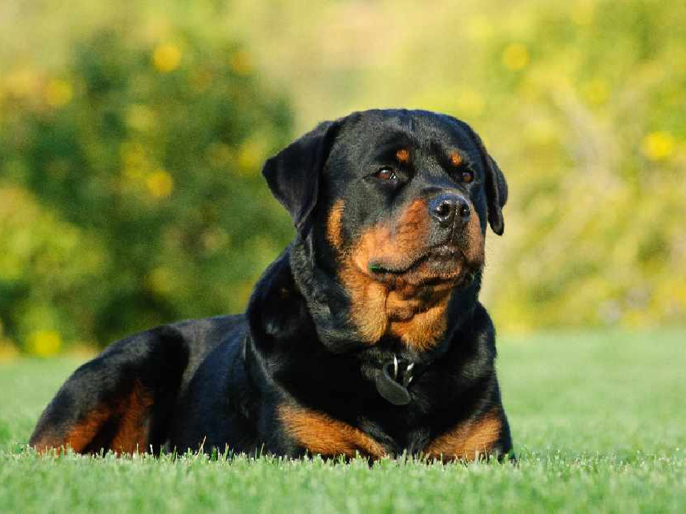

Rottweiler
Weight: 40-50kg
Coat: The Rottweiler is a breed of domestic dog, regarded as medium-to-large or large
According to the FCI Standard, the Rottweiler is considered to be one of the oldest dog breeds. Its origin goes back to Roman times. These dogs were kept as herder or driving dogs. They marched over the Alps with the Roman legions, protecting the humans and driving their cattle. In the region of Rottweil, these dogs met and mixed with the native dogs in a natural crossing. The main task of the Rottweiler now became the driving and guarding of the herds of cattle and the defence of their masters and their property. This breed acquired its name from the old free city of Rottweil and was known as the "Rottweil butcher's dog". The butchers bred this type of dog purely for performance and usefulness. In due course, a first rate watch and driving dog evolved which could also be used as a draught dog